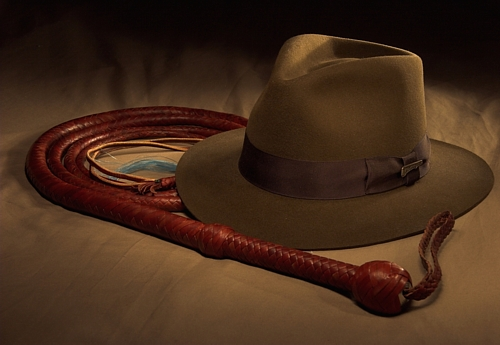
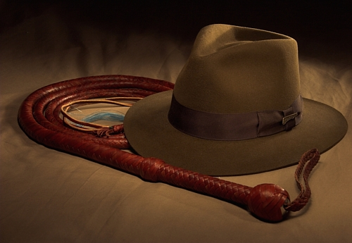

There many different types of whips. The most common are Bullwhips. Each whip has a diferent typle of handle and different design. They can also be many from different materials such as Paracord or Leather
1.Bullwhip One solid thong (braided leather section), with a short handle. Famous for cracking the sound barrier. Used for cattle driving, trick shots, and whip cracking competitions. Heavy and powerful—classic Indiana Jones style. 2. Stock Whip Longer handle, connected to the thong with a joint (the keeper). Popular in Australia. More versatile for cracking over animals without hitting them. Great for cattle herding and general ranch work.